SLOTH-MOD
Make Minecraft mods by describing them
A free Windows app. Tell an AI what you want in plain English: Sloth-Mod plans it, writes it, builds it and gets it ready to play. No coding, no Java setup.
Free. Windows 10 and 11, 64-bit. Works with free and local AIs.
Windows may show a blue warning. Sloth-Mod is free and not paid-signed, so Windows SmartScreen can say "Windows protected your PC". That is normal for a free app. Click More info, then Run anyway. Privacy · Security
Click the ground to summon a mob, click a mob to hit it, click the sloth to make it craft.
- Minecraft 26.x / 1.21.1 / 1.20.1
- Fabric
- NeoForge
- Forge
- Any AI, cloud or local
- No accounts, no tracking
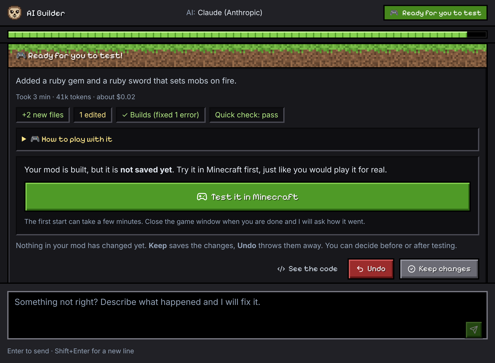
New in 1.3
Make it, then make it yours. You can now change what the AI built, by hand, without writing code.
A whole world from one sentence
Describe a theme, like "a candy kingdom", and get blocks, creatures and items that fit together. (Fabric 26.3 for now)
Change how it moves
Pick a part of a creature and choose how it moves: flap, wag, spin and more. You see it move right away.
Change its parts
Add horns or wings, give it a longer tail, make the legs bigger, or take a part away.
Rules in plain sentences
See what your mod does as sentences like "When you right-click, do this", and change them with pick lists.
Wings from your own picture
Use a picture you drew or picked as a fairy's wings.
Better looking creatures
Real feathered and leathery wings, and a fairy with butterfly wings.
Dragons
Tame, ride and fly dragons in five looks, and adjust how they move. (Fabric 26.3 for now)
Commands you can paste
The player guide now has ready-to-paste commands for your mod.
Suggest an improvement
Send us an idea from inside the app.
"Made with Sloth-Mod"
A small credit line in what you share. You can switch it off. And many fixes.
Where Sloth-Mod is going
A short, honest note. Nothing you use today is going away, and we say plainly what is real and what is not.
More ways to shape your own experiences
One sentence is a great start. Next we want you to shape more of it yourself, without code:
- campaigns with missions, quests and characters
- cutscenes and dialogue
- keep making it easier on cheap and free AI
No dates, on purpose. We would rather tell you when something is ready than promise it early.
What stays the same
- Free. No accounts, no tracking.
- Windows, installed for your user only.
- Cheap or free AI. Cloud AIs with free tiers, or an AI on your own PC.
- Safety checks on everything the AI writes, before every build.
Nothing breaks when you update: your mods, settings and keys stay. Tell us what you would like to make in the Community discussions.
What you can make
If you can describe it, you can try it. Mods are real Minecraft mods (.jar files) that you can play, share with friends and publish.
Items
Swords, snacks, tools, gems and gadgets, with their own look, sounds and behavior.
Blocks
Glowing lamps, singing blocks and machines that remember things, even after you reload the world.
Mobs
Friendly or hostile creatures: dragons, winged beasts and fairies, flying, swimming or rideable, with their own model, art, spawn rules and sounds.
Big projects
Whole game-changing mods. The AI writes a design and a step-by-step plan, then builds one piece at a time so you can test each step.
How it works
Four steps, and you stay in charge the whole way. Nothing is saved into your mod until you say so.
- Describe itType what you want, like "a honey cookie that heals a lot". Pick an idea from the home screen if you are stuck. The AI asks only what it needs.
- Pick the artThe AI draws a few versions of each texture and 3D model. Click the ones you like. The others are kept so you can swap later.
- Test in gameSloth-Mod builds the mod, repairs build errors and starts Minecraft with your unsaved build. Then you answer "Did it work?".
- Share itKeep it, undo it, or ask for a fix. Add it to a game profile, export a .jar with a friendly readme, or publish a draft to Modrinth.
See it in action
Real screenshots of the app, from one sentence to a finished mod.
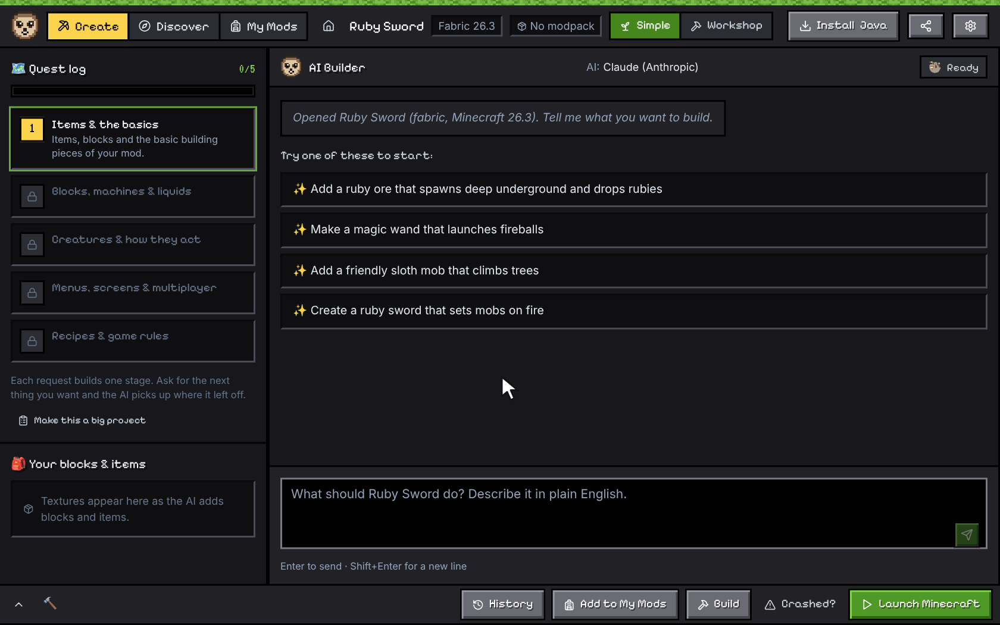
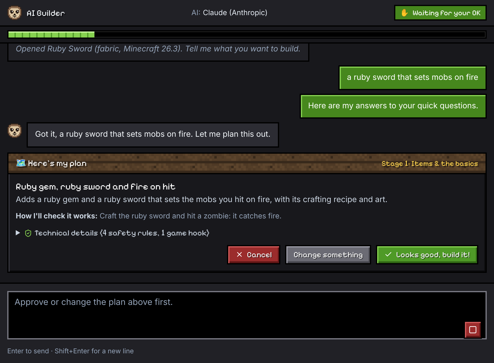
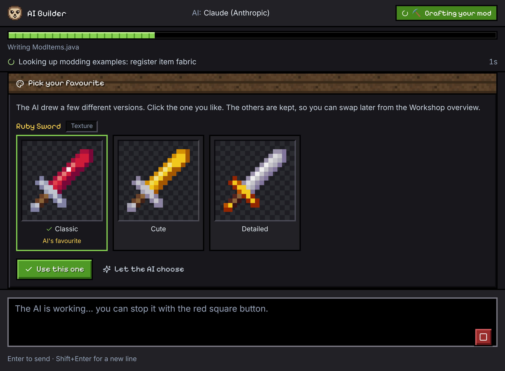
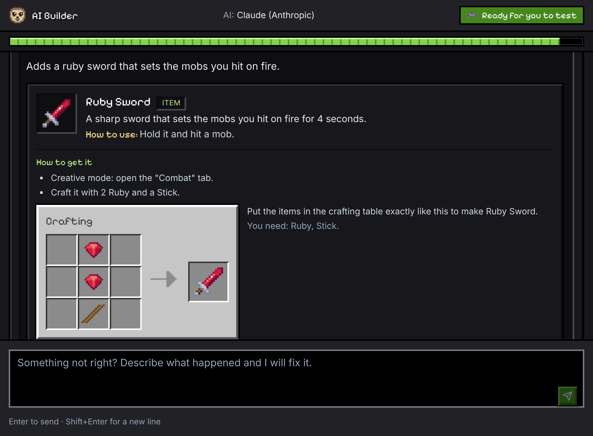
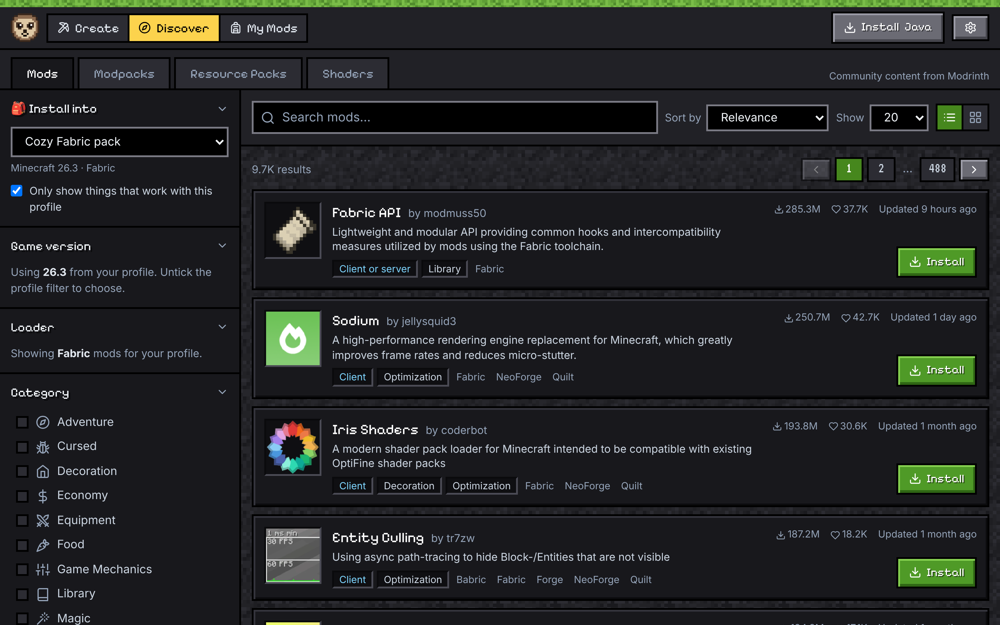
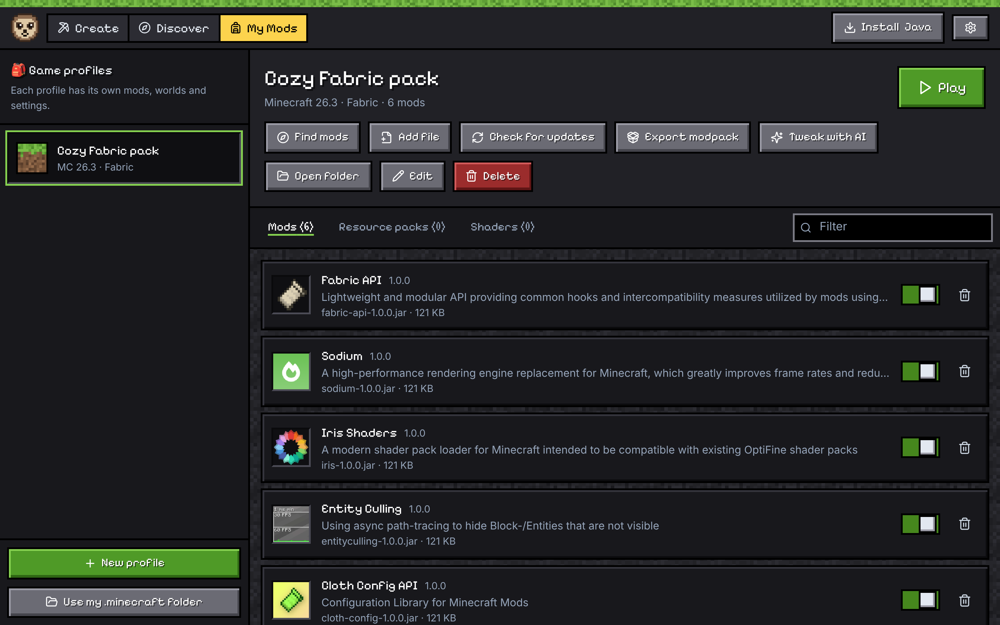
Creatures
Made by Sloth-Mod 1.3 and then played in Minecraft: dragons, a fairy with butterfly wings, and winged creatures.
Dragons need Fabric 26.3 for now.
Look around in the game
Pick a creature, then a side. Every picture is a real screenshot of the creature standing in Minecraft.
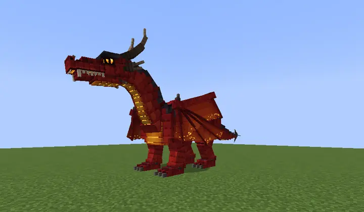
These are pictures taken in Minecraft from four sides, not 3D. You can drag sideways to change the side.
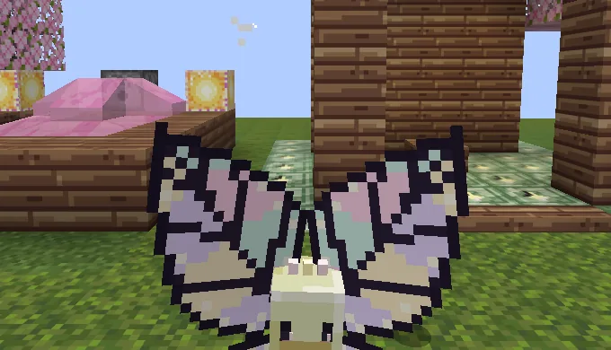
A fairy with butterfly wings 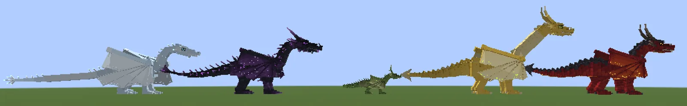
Five dragons, five looks 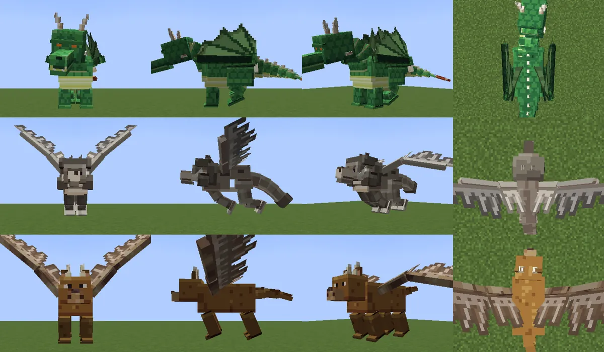
Leathery and feathered wings: a drake, a winged wolf and a winged stag 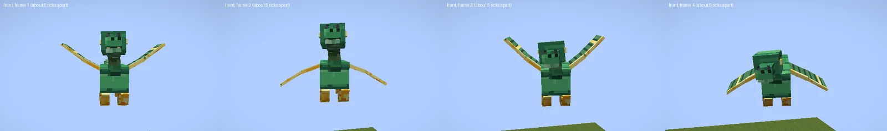
A dragon whose flap was set by hand 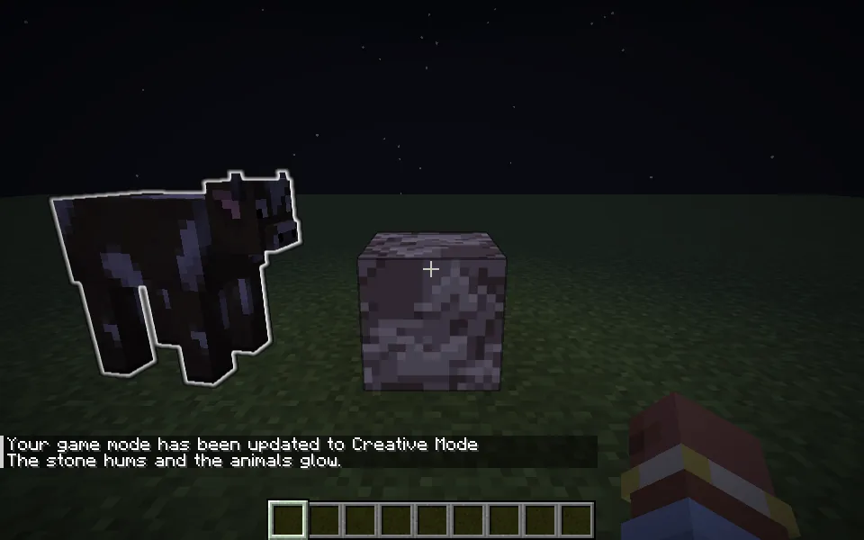
A rule you write: the stone hums and the animals glow
Showcase
Everything in this section was drawn or made by Sloth-Mod's own engine, the same one that makes the art and sounds in your mods. No image generator, no Minecraft art, nothing touched up by hand.
Items and blocks
Real 16x16 textures from the engine. Items are shown the way the game draws a dropped item: every pixel stretched into a thin block. Creatures have their own section above.
Pick Guns, Tools, Food or Blocks, then drag to turn it. Click it (or press Enter) for the next one, or use the ← → keys when it is focused.
In the app, the art picker shows you several versions of each one, so you choose what ends up in your mod.
Sounds
Made by the sound maker, not recorded. Each one becomes a real sound in your mod.
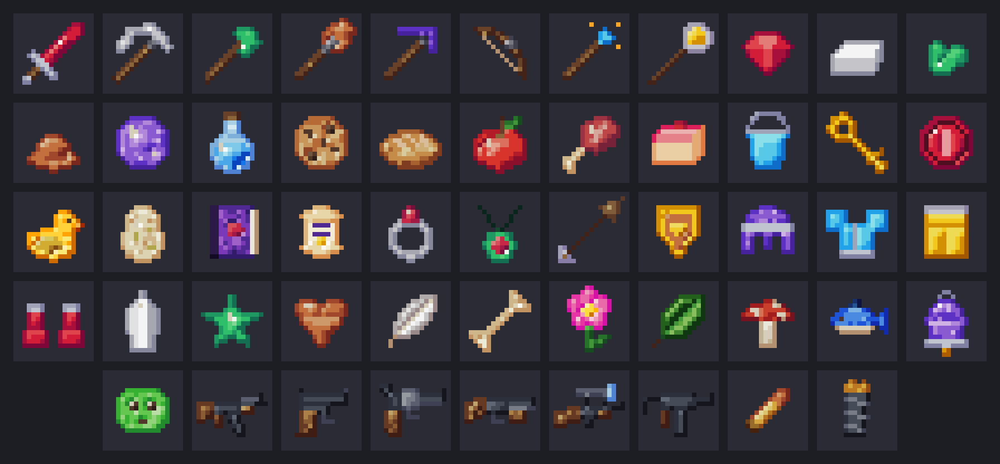
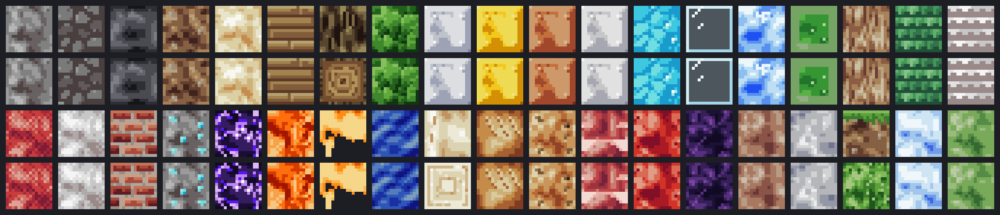
Everything in the box
A mod maker for people who do not code, and a mod manager for everyone who plays.
Any AI, including free and local
Claude, OpenAI, Gemini, Grok, DeepSeek, OpenRouter (has free models), Mistral, Groq and more, or run one on your own PC with LM Studio or Ollama. Keys stay in Windows Credential Manager.
Art picker
The AI draws several different designs of every texture and 3D model. You click your favourite, in a spinning 3D viewer for models and mobs.
Sound maker
614 kinds of sound, from squeaks and chimes to dragon roars and machine hums, made in the app, checked, and added to your mod as real sounds. No more "chicken that sounds like a chicken".
How-to-play guides
Every mod gets a player guide with crafting panels drawn like the real game, drop and spawn info, ready-to-paste commands and a pixel icon.
More things it can build
Dragons and other creatures that fly, swim or can be ridden, guns, vehicles, wearables, enchantments, music discs and armor trims.
Fast builds and quick edits
A simple mod takes about two AI turns. "Make the squeak louder" or "change it to blue" is just as quick.
Edit panel
Change sizes, colours, numbers, sounds, how things move, their parts and their rules, with a live preview and no AI. Paint textures in the pixel editor, or take a model to Blockbench and back.
Update to a new Minecraft version
One run moves your mod to a newer version of the same loader (or Forge to NeoForge) and keeps your art, sounds and hand edits.
Big project mode
For huge ideas: an approved design, a 20 to 50 step roadmap and a project map, built one tested step at a time.
Spending limit
See what each mod costs. Ask before one mod passes an amount you pick, or stop for the day after a daily cap. A PIN can lock the limits.
Safety guard
AI-written code is scanned before every build for things a mod should never do, like launching programs, opening web connections or touching files outside the game folders. Build files are checked and locked too.
Mod manager with Modrinth
Discover mods, modpacks, resource packs and shaders. Game profiles, on/off switches, one-click updates, .mrpack export and Play through the official launcher.
Modpack compatibility check
Before your mod joins a pack, a throwaway server starts with the pack's mods and tells you in plain words whether it works.
Three versions, three loaders
Minecraft 26.x, 1.21.1 and 1.20.1 on Fabric, NeoForge and Forge (see the table below). It downloads its own Java, so your system Java is never touched.
Review, undo, history
The AI works in a sandbox copy. You review the changes, keep or undo them, and restore older versions from History.
Crash explainer
If the game closes unexpectedly, Sloth-Mod reads the crash report, explains the cause in plain English and offers a "Fix it" button.
Share and publish
Export a .jar with a friendly readme, copy a message for a friend, or publish a draft project to Modrinth. Modpacks export as .mrpack.
| Minecraft | Fabric | NeoForge | Forge |
|---|---|---|---|
| 26.x | Yes | Yes | No |
| 1.21.1 | Yes | Yes | No |
| 1.20.1 | Yes | No | Yes |
Safe and private, in plain words
Mods are programs, so Sloth-Mod is careful with what the AI writes and with what leaves your PC.
A guard reads the AI's code
Before every build, AI-written code is scanned for things a mod should never do, like launching programs, opening web connections or touching files outside the game folders. The build files are checked too, locked while a mod is made, and only source files can be added to your project. A blocked build tells you why.
Nothing is kept until you say so
The AI works on a copy. You test the result, then keep it or undo it. Older versions stay in History.
No accounts, no tracking
No sign-up, no telemetry, no analytics. The only thing added to your mods is a small "Made with Sloth-Mod" credit line, and you can switch it off. Your mod and its source are yours. Your requests and mod files go only to the AI you pick, or nowhere at all with a local AI. The AI may read a short summary from Wikipedia or the Minecraft wiki while planning (can be switched off).
Keys stay on your PC
API keys live in Windows Credential Manager, never in files or logs. Sloth-Mod never sees your Microsoft login: the official launcher handles it.
Free, and your mods are yours
Sloth-Mod costs nothing. What you make with it belongs to you: share it, publish it or sell it. Every open-source part inside the app is listed with its license.
Honest limits
The guard is a safety net, not a guarantee, and the installer is not code-signed yet. Code that passes the guard still runs with your Windows rights. Only play mods you trust.
PrivacySecurityDisclaimerLicenses
Sloth-Mod is a fan-made tool. It is not an official Minecraft product and is not approved by or associated with Mojang or Microsoft.
System requirements
A normal Windows PC that can already run Minecraft is enough.
- Windows 10 or 11, 64-bit
- About 4 GB free disk space for the Java and Minecraft downloads
- Internet for the first setup (and for cloud AIs and Modrinth)
- A Minecraft Java Edition account to play what you make
- No Java, Gradle or coding tools to install, Sloth-Mod brings its own
- Installs for your user only, no admin prompt
- Prefer offline AI? Point it at LM Studio or Ollama on your PC
New things are built and proven first on Fabric 26.3. NeoForge 1.21.1, Forge 1.20.1, Fabric 1.21.1, Fabric 1.20.1 and NeoForge 26.3 work and get fixes, and new things reach them later in batches. Fabric and NeoForge 26.1 and 26.2 get fixes only. Small updates arrive often, and the app offers them by itself.
Support Sloth-Mod
Sloth-Mod is free. If it helps you, you can support it here.
It is just a link. This page loads nothing from them, and it is fine not to.
Questions
Is it free?
Yes. Sloth-Mod is free to download and use, and the mods you make are yours. The only cost can be your AI: some providers have free tiers, OpenRouter has free models, and local AIs (LM Studio, Ollama) cost nothing to run. The app can show what each mod cost and lets you set a spending limit.
Do I need to know how to code?
No. You describe what you want in plain English and answer a few clickable questions. The app writes, builds and tests the mod. If you do like code, the Workshop view has a full editor and diffs.
Which AI should I use?
Any of them. The setup wizard lists every provider with a "Get an API key" button and a note on cost, and a Test this AI button checks that it can really drive the app. Bigger models make bigger mods with fewer repairs. For free: OpenRouter's free models, or a local model through LM Studio or Ollama.
Why does Windows show a warning?
Sloth-Mod is free and not paid-signed (a signing certificate costs money), so Windows SmartScreen can show a blue "Windows protected your PC" box for a new app. Click More info, then Run anyway. Only do this for the installer from this site or the GitHub Releases page. Updates the app downloads later are signed and checked before they install. More in Privacy and Security.
Is it safe?
It is built to be careful. The AI writes into a sandbox copy and you review the changes before anything is kept, with undo and history. AI-written code is scanned before every build for things a mod should never do. The build files are checked and locked while a mod is made. Downloads from Modrinth are checked against their SHA-512 checksums, and your API keys are stored in Windows Credential Manager, never in files. It never sees your Microsoft login: signing in and launching stay with Mojang's own launcher.
Be honest with yourself about limits: mods are programs, and the guard is a safety net, not a guarantee. Only play mods you trust, and see SECURITY.md for details and how to report a problem.
Does it work on Mac or Linux?
The installer is for Windows 10 and 11 only.
What about privacy, and "Sign in with Grok"?
No accounts and no telemetry: your keys stay in Windows Credential Manager, and your prompts and mod files go only to the AI provider you choose. Downloads contact Modrinth, Mojang and the loader sites. Read PRIVACY.md, DISCLAIMER.md and the third-party licenses. "Sign in with Grok" is experimental and off by default: it may be against xAI's terms, so an xAI API key is the supported way.
Is this an official Minecraft product?
No. Sloth-Mod is a fan-made tool. It is not approved by or associated with Mojang or Microsoft, and it contains no Minecraft assets.
Something broke. What do I do?
Press Report a problem in the app (on the failure card, in the crash window, or in Settings). It fills in a GitHub issue for you with your log already attached, with keys and your Windows name hidden. You just check it and press Submit. Have an idea? Use Suggest an improvement in the app, or open an issue here.